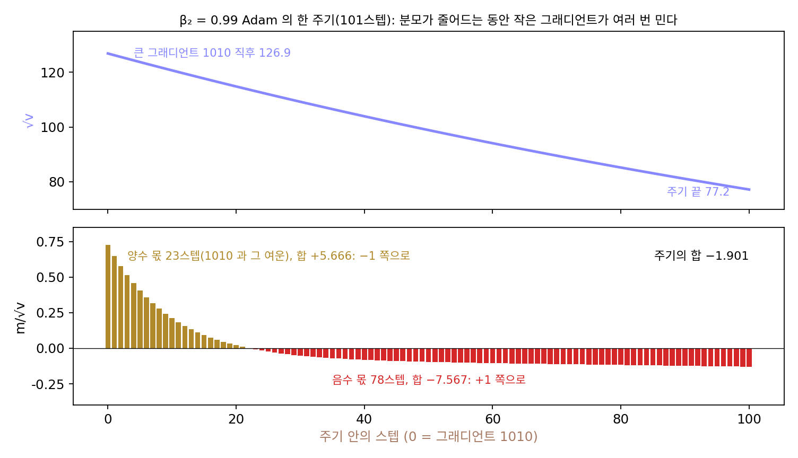
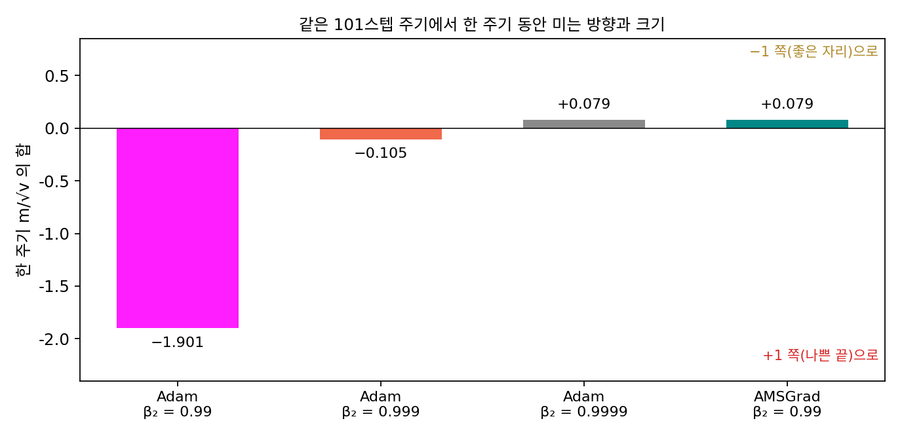
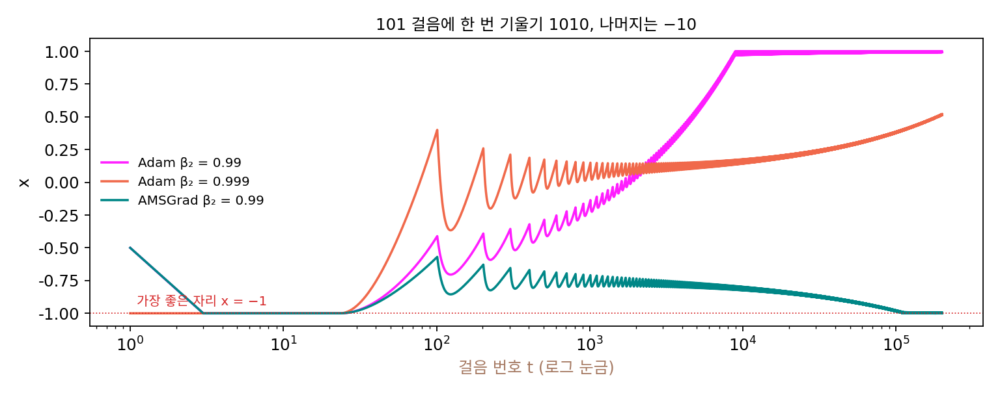
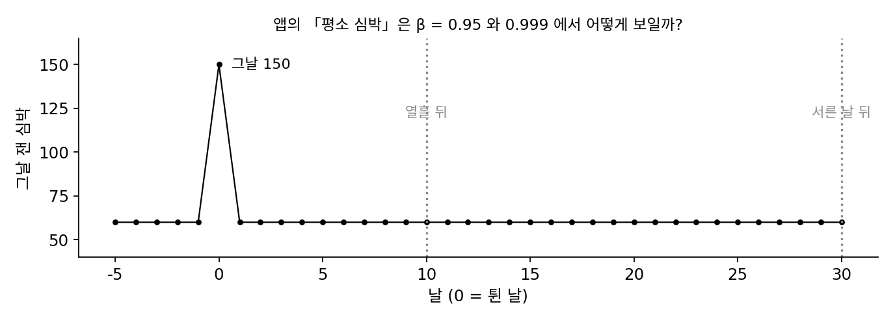
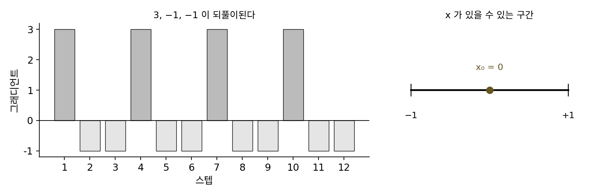
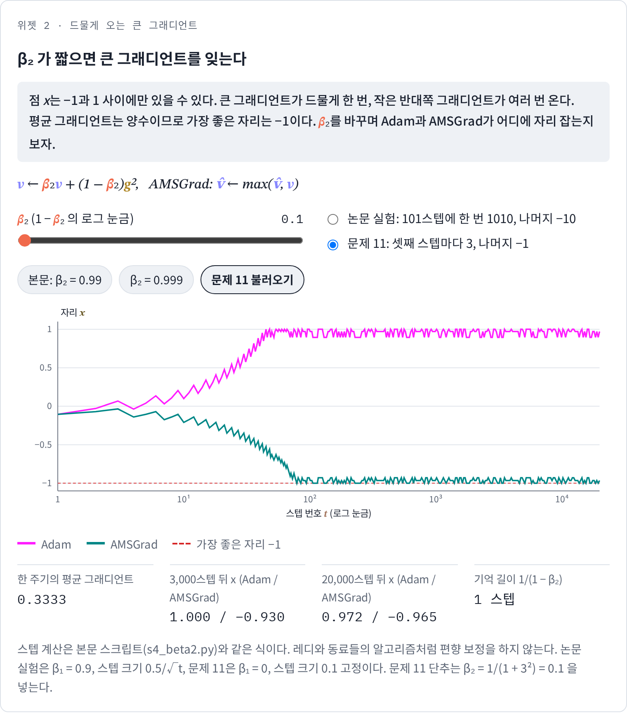
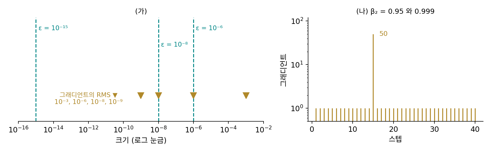

β₂: 그래디언트 제곱을 얼마나 오래 기억하나
Adam 의 기본값 β₂ = 0.999는 그래디언트 제곱을 대략 최근 1000스텝 동안 기억한다는 뜻이다. 기억이 끝없는 AdaGrad 는 새 지형을 따라가지 못했고, 기억이 짧은 RMSProp 은 나누는 수가 출렁여 평균이 0인 그래디언트에도 한쪽으로 밀렸다. 그러면 기억 길이는 어디쯤이 알맞을까? 특히 아주 드물게 오는 큰 그래디언트가 중요한 정보라면 어떨까? 드문 특징을 살리려고 시작한 AdaGrad 의 생각이 이동 평균으로 바뀌는 사이에 무언가를 잃지는 않았을까?
역사: Adam 이 바닥을 찾지 못하는 볼록 문제
Adam 논문에는 볼록한 문제에서 Adam 이 수렴한다는 증명이 있었다. 그런데 출력의 종류가 아주 많은 문제처럼 몇몇 응용에서 Adam 이 좋은 해로 가지 못한다는 보고가 쌓였다. 구글 뉴욕의 사샹크 레디(Sashank Reddi), 사티엔 케일(Satyen Kale), 산지브 쿠마르(Sanjiv Kumar)는 2018년 표현 학습 국제 학회(ICLR)에 낸 「Adam 의 수렴에 대하여, 그리고 그 너머」에서 원인을 이동 평균에서 찾았다. 그들은 이전 증명의 어느 부분이 틀렸는지 짚고, Adam 이 가장 나쁜 자리로 가는 아주 작은 볼록 문제를 직접 만들어 보였다.
그들의 실험 하나를 그대로 다시 돌려 보자. 점 x는 −1과 1 사이에만 있을 수 있다(밖으로 나가면 끝으로 되돌린다). 스텝마다 손실이 일차 함수로 주어지는데, 101스텝에 한 번은 그래디언트가 1010이고 나머지 100스텝은 그래디언트가 −10이다. 101스텝의 평균 그래디언트는 (1010 − 1000)/101 = 0.099로 양수이니, 손실을 가장 작게 하는 자리는 x = −1이다. 논문처럼 β₁ = 0.9, β₂ = 0.99로 두고(이 실험은 편향 보정을 하지 않는다), 스텝 크기를 0.5/√t로 줄여 가며 걸었다.
| 1,000스텝 뒤 x | 10,000스텝 뒤 | 200,000스텝 뒤 | |
|---|---|---|---|
| Adam (β₂ = 0.99) | −0.155 | +0.996 | +0.994 |
| Adam (β₂ = 0.999) | +0.130 | +0.172 | +0.514 |
| Adam (β₂ = 0.9999) | +0.371 | +0.221 | −0.075 |
β₂ = 0.99인 Adam 은 가장 좋은 자리 −1의 정반대 끝인 +1에 가서 머무는데, 평균 그래디언트가 양수인데도 왜 거꾸로 걸어갔을까? 한 주기 안을 들여다보자. 큰 그래디언트 1010이 오는 스텝에는 v도 함께 크게 뛰어(√v = 126.9), 그 스텝의 크기는 학습률의 0.725배로 묶인다. 1010은 m에도 남아(m = 92.0) 스텝마다 0.9배로 줄어들 뿐이어서, 그 뒤 22스텝 동안 −10이 들어와도 m은 양수이고, 큰 그래디언트가 온 스텝까지 23스텝의 「m/√v」를 더하면 +5.666이다. 그사이 v는 0.99씩 줄어 주기 끝에는 √v = 77.2까지 내려오고, m이 음수로 돌아선 나머지 78스텝의 합은 −7.567이다. 분자 m만 한 주기 동안 더하면 양수인 23스텝의 합 +699.6과 음수인 78스텝의 합 −689.6으로 평균 그래디언트와 같은 쪽(+10)인데, 앞의 양수 합은 큰 그래디언트가 막 키운 분모(이 23스텝의 √v 평균 120.2)로 나뉘고, 뒤의 음수 합은 그 큰 그래디언트가 v에서 빠르게 잊히며 작아진 분모(78스텝의 평균 94.0)로 나뉜다. 그래서 한 주기 동안 「m/√v」를 더하면 −1.901이 되어, 평균 그래디언트가 가리키는 −1과 반대인 +1 쪽으로 간다. β₂를 0.999로 늘리면 한 주기의 합이 −0.105로 줄고 0.9999면 −1 쪽으로 돌아오기 시작하지만, 그만큼 느리다. 레디와 동료들은 어떤 β₁, β₂를 골라도(β₁이 √β₂보다 작기만 하면) 이렇게 실패하는 문제를 만들 수 있음도 보였다.

그들의 고침은 나누는 수로 v 대신 「지금까지 나온 v의 최댓값」을 쓰는 한 줄이었다. 그러면 큰 그래디언트가 남긴 큰 분모가 줄지 않으니, 그 뒤의 작은 그래디언트들이 줄어든 분모를 등에 업고 큰 스텝을 내는 일이 사라진다. 같은 실험에서 한 주기의 합은 +0.079가 되어, 1,000스텝 뒤 −0.721, 10,000스텝 뒤 −0.801, 200,000스텝 뒤 −1.000으로 가장 좋은 자리에 간다. 그래디언트를 1%의 확률로 1010, 나머지는 −10으로 뽑는 확률판에서도(씨앗 고정) 200,000스텝 가운데 마지막 1만 스텝 동안의 평균 자리가 Adam 은 +0.991, 이 방법은 −0.262다.


이렇게 Adam 에서 나누는 수를 지나온 2차 모멘트의 최댓값으로 바꾼 방법을 AMSGrad (지나온 v 의 최댓값으로 나누기 / AMSGrad)라 한다. 논문은 이름의 뜻을 따로 풀지 않았다.
최댓값은 줄지 않으니 나누는 수가 AdaGrad 처럼 한쪽으로만 움직이지만, 그렇다고 AdaGrad 로 돌아간 것은 아니다. v 자체는 여전히 이동 평균이라 오래 작은 그래디언트만 오면 최댓값 아래에 머물 뿐 더 커지지 않는다. 대신 학습 초반에 한 번 튄 그래디언트가 끝까지 분모에 남는다는 AdaGrad 의 약점을 일부 되가져온다. 기억 길이를 짧게 하면 지형을 잘 따라가지만 드문 큰 그래디언트를 잃고, 길게 하면 드문 그래디언트를 살리지만 한 번 튄 값을 오래 끌고 간다. β₂는 지형이 바뀐 뒤 따라잡는 데 드는 스텝 수와 드문 큰 그래디언트를 살리는 정도 사이에서 하나를 고르는 값이다.

증명이 틀렸으면 돌려 보면 바로 알았을 것 같은데요. 이 실험은 노트북에서도 몇 초면 끝나잖아요.

무엇을 돌릴지 알면 그래요. 이 실험에서 Adam 을 넘어뜨린 것은 무엇이었죠?

101스텝에 한 번 오는 큰 그래디언트요. 보통 쓰는 데이터로 하는 실험에는 그런 모양이 일부러 들어가지 않으니까, 잘 되는 결과만 쌓였겠네요.

레디와 동료들이 받은 보고도 출력의 종류가 아주 많은 문제에서 나왔어요. 출력 하나하나는 드물게 나오죠.

드문 출력에 딸린 가중치는 거의 내내 작은 그래디언트를 받다가 가끔 큰 걸 받겠네요. AdaGrad가 노렸던 드문 낱말과 모양이 비슷해요.

그래도 Adam 논문은 심사를 거쳐 학회에 실렸잖아요. 반례가 이렇게 작은데 세 해쯤 아무도 몰랐다는 건 이상해요.

반례는 증명이 어디서 틀렸는지 알아야 만들 수 있어요. 돌려 보는 실험은 증명의 몇째 줄이 틀렸는지 알려 주지 않고요. 그들의 논문이 틀린 자리를 짚는 일과 반례를 만드는 일을 함께 한 것도 그래서예요.

큰 그래디언트가 금방 잊히는 게 문제였다면, 실제 큰 모델들은 β₂를 0.999보다 더 길게 잡았을까요?
ML에서: 큰 언어 모델의 β₂ = 0.95와 ε
실제 큰 모델의 설정은 위의 처방과 반대쪽으로 갔다. 오픈AI 의 GPT-3 논문(브라운 외, 2020)은 모든 모델을 「β₁ = 0.9, β₂ = 0.95, ε = 10⁻⁸인 Adam」으로 학습했다고 적었고, 메타의 LLaMA(투브롱 외, 2023)도 AdamW 에 β₂ = 0.95를 썼다. LLaMA 2 논문은 같은 β₂에 ε = 10⁻⁵를 적었다. β₂ = 0.95는 기억 길이를 기본값의 1000스텝에서 20스텝으로 크게 줄인 것인데, 논문들은 왜 0.95인지 따로 설명하지 않았다. 다만 기억 길이가 짧으면 한 번 튄 그래디언트가 분모에서 빨리 빠지고, 그래디언트 크기가 바뀌는 데도 빨리 따라간다는 것은 RMSProp 의 문제 6(한 번 튄 그래디언트)에서 계산한 대로다. AMSGrad 는 파이토치에 amsgrad=True 한 칸으로 들어 있지만 기본값은 꺼져 있다.
ε도 큰 모델에서는 그냥 작은 수가 아니다. 구글 딥마인드의 미첼 워츠먼(Mitchell Wortsman)과 동료들은 2023년 작은 트랜스포머로 큰 모델의 학습 불안정을 재현하는 연구에서, 모델이 커지고 학습률이 커질수록 그래디언트의 RMS 가 줄어 기본값 ε = 10⁻⁸에 가까워진다는 것을 보였다. 그러면 Adam 의 스텝이 학습률보다 훨씬 작아져 그 층이 거의 배우지 않는다. 그들은 파라미터 수십억 개짜리 모델에서 ε를 10⁻¹⁵로 낮추자 손실이 나아졌고, 10⁻⁶으로 올리자 학습이 불안정해졌다고 보고했다.
문제 10. 체감 심박
운동 앱이 「평소 심박」을 이동 평균으로 보여 주는데, 매일 60이던 심박이 어느 하루 150으로 뛰고 다시 60으로 돌아왔다. (가) 이동 평균의 비율 β가 0.95와 0.999일 때, 그날·열흘 뒤·서른 날 뒤의 평소 심박은? 두 경우 모두 처음 평균은 60에서 시작한다. (나) 옛 값이 반으로 잊히는 데 걸리는 날 수는?

0.999가 더 좋은 앱 같아요. 하루 튄 걸 거의 무시하니까 평소 심박이 안정적이잖아요.
0.95면 그날 64.50, 열흘 뒤 62.69, 서른 날 뒤 60.97이야. 0.999면 그날 60.09이고 열흘 뒤에도 서른 날 뒤에도 60.09야.
0.999 쪽은 튄 값을 무시한 걸까요, 아니면 오래 들고 있는 걸까요?

아, 0.09가 서른 날 뒤에도 그대로 남아 있어요. 조금 반영한 대신 거의 안 잊어요. 반으로 잊히는 데 0.95는 13.5일, 0.999는 692.8일이에요.

반감 날 수가 ln 0.5/ln β이고 대략 0.69/(1 − β)야. 기억 길이 1/(1 − β)가 20일과 1000일이니까. 진짜로 심박이 바뀌었을 때, 가령 운동을 시작해서 평소 심박이 내려가면 0.999 앱은 그걸 몇 달 동안 못 보여 줘.
하루 튄 걸 오래 끌고 가거나, 진짜 변화를 늦게 보여 주거나, 둘 중 하나를 고르는 거네요. 큰 언어 모델이 0.95를 쓴 게 빨리 잊는 설정을 고른 거고요. 학점 계산에 이번 학기만 넣느냐 전 학년을 넣느냐 같은 거예요.
문제 11. 셋째 스텝마다 3
점 x는 [−1, 1] 안에 있고, 스텝마다 그래디언트가 3(세 스텝에 한 번)이거나 −1(나머지)이다. β₁ = 0(그래디언트의 평균을 쓰지 않음), β₂ = 1/(1 + 3²) = 0.1, 편향 보정 없음, 스텝 크기 0.1 고정, x₀ = 0이다(레디와 동료들이 이론에서 쓴 예). (가) 가장 좋은 자리는 어디인가? (나) 처음 여섯 스텝의 √v와 움직임을 계산하라. 한 주기(세 스텝)에 x는 어느 쪽으로 가는가? (다) 3000스텝 뒤 Adam 과 AMSGrad 는 어디에 있는가? (풀어 본 뒤 위젯 2의 「문제 11 불러오기」로 확인해 보자.)

그래디언트가 셋 중 둘은 −1이니까 x를 키우는 쪽이 이득이죠. 가장 좋은 자리는 +1이요.
한 주기 동안 받는 그래디언트를 다 더하면요?

3 − 1 − 1 = +1이에요. 평균이 양수니까 손실이 줄어드는 쪽은 x를 줄이는 쪽, 가장 좋은 자리는 −1이네요. 횟수만 셌어요.
계산해 볼게. 첫 스텝은 v = 0.9 × 9 = 8.1, √v = 2.846이라 0.1 × 3/2.846 = 0.1054만큼 −쪽으로 가. 둘째 스텝은 v = 0.1 × 8.1 + 0.9 = 1.71, √v = 1.308, +0.0765. 셋째는 √v = 1.035로 +0.0966. 한 주기에 −0.1054 + 0.0765 + 0.0966 = +0.068이야. β₂가 0.1이라 큰 그래디언트를 둘째 스텝에서 벌써 거의 잊어 버려.
그러면 3000스텝 뒤에는요? AMSGrad 는 둘째 스텝의 나누는 수가 무엇이죠?
Adam은 한 주기에 +0.068씩 가니까 +1.000, 가장 나쁜 끝에 붙어요.

AMSGrad는 지금까지 나온 v의 최댓값으로 나누니까… 둘째 스텝에도 첫 스텝의 √8.1 = 2.846을 그대로 써요. 그럼 −1 쪽 그래디언트가 +0.0351씩밖에 못 밀어요.
한 주기로 더하면?

−0.1054 + 0.0351 + 0.0351 = −0.035로 −쪽이야. 3000스텝 뒤 −0.930에 있어. 스텝 크기를 고정했으니 −1 둘레를 오가고.
그럼 β₂만 0.5나 0.9로 올리면 이 문제는 풀리나요? … 0.5면 −0.877, 0.9면 −0.893, 0.99면 −0.895예요. 풀리네요.
이 문제에서는 그래요. 큰 그래디언트 3이 세 스텝마다 오니까 기억 길이가 두세 스텝만 넘으면 돼요. 그런데 본문의 실험은 큰 그래디언트가 101스텝마다 왔죠. 큰 그래디언트가 더 드물고 더 크면, 어떤 β₂를 골라도 그보다 긴 주기를 만들 수 있어요.

1년에 한 번 큰 상을 받는 팀원이 있는데 팀장이 석 달치 기록만 보고 평가하면 그 팀원은 늘 낮은 점수를 받는 거랑 같네요. 평가 기간을 1년으로 늘리면 이번에는 2년에 한 번 상을 받는 사람이 늘 낮은 점수를 받고요.

문제 12. ε 와 그래디언트의 크기
Adam 의 스텝은 학습률 × m̂/(√v̂ + ε)이다. 그래디언트가 오래 같은 값을 가리켜 m̂ = √v̂ = (그래디언트의 RMS)라고 하자. (가) 그래디언트의 RMS 가 10⁻³, 10⁻⁶, 10⁻⁸, 10⁻⁹일 때, ε = 10⁻⁶, 10⁻⁸, 10⁻¹⁵에서 스텝은 학습률의 몇 배인가? (나) 그래디언트가 늘 1이다가 한 스텝만 50으로 튀었다. β₂ = 0.95와 0.999에서 튄 바로 뒤 Adam 의 스텝은 튀기 전의 몇 배이고, 90%로 돌아오는 데 몇 스텝 걸리는가?

ε는 0으로 나누는 걸 막는 거니까 어떤 값이든 결과는 거의 같겠죠.
그래디언트의 RMS 가 10⁻⁸이고 ε = 10⁻⁸이면요?
10⁻⁸/(10⁻⁸ + 10⁻⁸) = 0.5배… 스텝이 반이 돼요. ε = 10⁻⁶이면 0.0099배, 거의 안 움직여요. 10⁻¹⁵면 1배 그대로고요. 그래디언트 RMS 가 10⁻³일 때는 셋 다 1배 근처예요.
그러니까 ε는 「이보다 작은 그래디언트는 작게 걷게 하는 문턱」이야. 그래디언트가 ε보다 충분히 크면 Adam이고, ε보다 작으면 학습률이 η/ε인 경사하강에 가까워져. 워츠먼 연구에서 큰 모델의 그래디언트 RMS 가 10⁻⁸ 근처까지 내려갔다는 건, 기본값 그대로면 스텝이 반토막 났다는 뜻이네.
(나)는요? LLaMA 가 ε를 10⁻⁵로 올린 건 스텝을 줄이는 쪽이었는데, β₂를 0.95로 내린 건 어느 쪽일까요?
β₂ = 0.95면 튄 바로 뒤 스텝이 0.089배로 확 줄고 123스텝이면 돌아와요. 0.999면 0.535배로 덜 줄지만 2365스텝이나 걸려요. 0.95는 튀는 순간에는 세게 브레이크를 밟고 금방 놓는 쪽이네요.
숫자 두 개를 바꾼 것 같았는데, 「언제 브레이크를 밟고 얼마나 오래 밟느냐」를 정한 거였어요. 시험 기간에만 휴대폰을 잠그는 앱이랑 한 학기 내내 잠그는 앱의 차이 같네요.